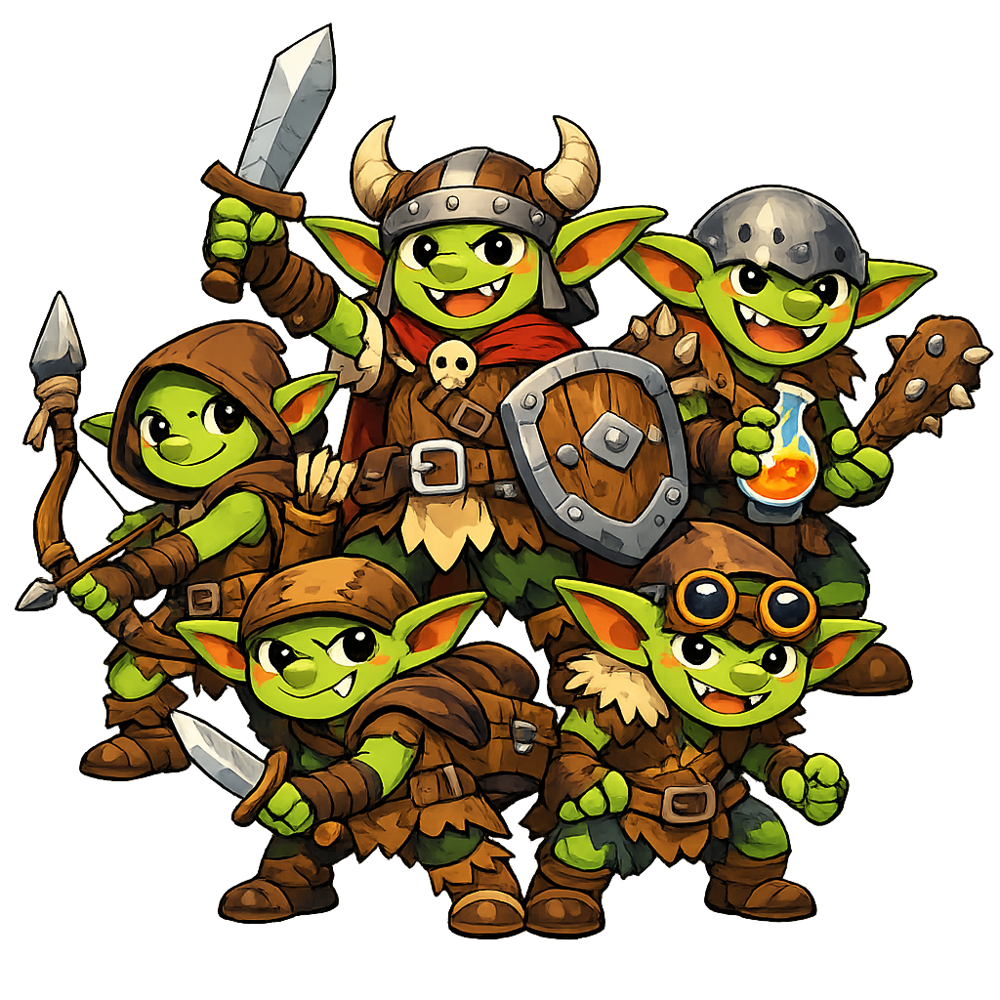

Εδώ και μήνες, περίεργα πράγματα συμβαίνουν στην Κοιλάδα: πρόβατα εξαφανίζονται, ταξιδιώτες δεν επιστρέφουν, και τα βράδια βλέπουν φωτιές στον ουρανό πάνω από τα βουνά. Οι ήρωες ξεκινούν από ένα μικρό χωριό και σιγά-σιγά ανακαλύπτουν ότι πίσω από όλα κρύβεται ένας νεαρός δράκος που έχτισε τη φωλιά του στην κορυφή του βουνού — και μαζεύει γύρω του άλλα επικίνδυνα πλάσματα.
Χρησιμοποιήστε το αρχείο map.svg — δείχνει 5 σημεία που αντιστοιχούν στα κεφάλαια:
| # | Τοποθεσία | Κεφάλαιο |
|---|---|---|
| 1 | Χωριό Ξεκινήματος | Κεφάλαιο 1 |
| 2 | Δάσος των Γκόμπλιν | Κεφάλαιο 2 |
| 3 | Ερείπια των Σκελετών | Κεφάλαιο 3 |
| 4 | Φωλιά του Γρύπα | Κεφάλαιο 4 |
| 5 | Σπηλιά του Δράκου | Κεφάλαιο 5 |
Σκηνή ανοίγματος: Οι ήρωες φτάνουν (ή ζουν ήδη) στο χωριό Χλωροπηγή. Ο χωρικός Μπάρναμπι τους πλησιάζει πανικόβλητος — το πρόβατό του εξαφανίστηκε χθες βράδυ, και δεν είναι το μόνο.
Τι μαθαίνουν οι ήρωες αν ρωτήσουν στο χωριό (Δοκιμές Πειθούς/Διερεύνησης, DC 10):

Σκηνή: Το δάσος είναι πυκνό και σκοτεινό. Δοκιμή Αντίληψης (DC 12) για να προσέξουν τα ίχνη ή την ενέδρα πριν χτυπήσει.
Μάχη 1 (Αδύναμη): 2 Γιγαντιαίοι Αρουραίοι επιτίθενται από τους θάμνους.
Ενδιάμεση σκηνή: Βρίσκουν ένα εγκαταλελειμμένο στρατόπεδο με κλεμμένα ζώα δεμένα — μπορούν να τα ελευθερώσουν (καλή πράξη, όχι υποχρεωτική).
Μάχη 2 (Δίκαιη): 2-3 Γκόμπλιν φυλάνε την είσοδο μιας μικρής σπηλιάς μέσα στο δάσος όπου κρύβουν κλεμμένα πράγματα.
Σκηνή: Παλιά ερείπια ενός ξεχασμένου πύργου. Ο αέρας είναι κρύος και βαρύς.
Γρίφος εισόδου (προαιρετικός): Μια σκαλισμένη πέτρα με σύμβολα — Δοκιμή Εξυπνάδας ή Ιστορίας (DC 13) για να ανοίξει μια κρυφή πόρτα χωρίς να ενεργοποιηθεί παγίδα.
Μάχη 1 (Δίκαιη): 2 Σκελετοί φυλάνε τον κεντρικό θάλαμο.
Μάχη 2 (Δύσκολη): 1 Ζόμπι στο βάθος, μαζί με τον τελευταίο Σκελετό αν επέζησε.
Σκηνή: Το μονοπάτι ανεβαίνει στο βουνό. Ο άνεμος δυναμώνει, τα βράχια είναι ολισθηρά.
Πρόκληση διαδρομής: Δοκιμή Αθλητισμού ή Ακροβατικών (DC 13) για να περάσουν ένα στενό πέρασμα χωρίς να γλιστρήσουν.
Επιλογή (προαιρετική μάχη): 1-2 Λύκοι μπορεί να τους ακολουθούν από απόσταση.
Μάχη Βασική (Δύσκολη): Γρύπας υπερασπίζεται τη φωλιά του. Πετάει, οπότε είναι δύσκολο να τον χτυπήσουν εύκολα!
Σκηνή ανοίγματος: Η είσοδος της σπηλιάς είναι μαύρη σαν πίσσα, ζεστός αέρας βγαίνει από μέσα, και ακούγεται ένα βαρύ, αργό ροχαλητό.
Πριν τη μάχη (προαιρετικό): Δοκιμή Αντίληψης (DC 14) για να δουν τον δράκο κοιμισμένο πάνω σε σωρό θησαυρού — ευκαιρία για αιφνιδιαστική επίθεση (Πλεονέκτημα στην πρώτη ζαριά επίθεσης)!
Συμβουλές για τη μάχη:
| NPC | Ρόλος | Σημειώσεις |
|---|---|---|
| Μπάρναμπι | Χωρικός, δίνει την αποστολή | Νευρικός, μιλάει γρήγορα, πολύ ευγνώμων |
| Γέρος Θάντος | Ηλικιωμένος του χωριού | Ξέρει παλιές ιστορίες για τα Ερείπια |
| Γκρέβιν (Νάνος) | Πιθανός σύμμαχος | Μπορεί να δώσει συμβουλή ή να πολεμήσει μαζί τους |
| Ο Δράκος | Τελικό αφεντικό | Δεν είναι απαραίτητα "κακός" — απλά προστατεύει τη φωλιά του! |
Χρησιμοποιήστε Milestone Leveling (βλ. Οδηγό GM):
| Μετά το... | Ανεβαίνουν σε... |
|---|---|
| Κεφάλαιο 1 (αρχή) | Επίπεδο 1 |
| Ολοκλήρωση Κεφαλαίου 2 ή 3 | Επίπεδο 2 |
| Ολοκλήρωση και των δύο (2 και 3) | Επίπεδο 3 |
| Ολοκλήρωση Κεφαλαίου 4 | Επίπεδο 3 (ετοιμάζονται για τη μάχη με το αφεντικό) |
| Νίκη επί του Δράκου (Κεφάλαιο 5) | Επίπεδο 4 — τέλος εκστρατείας! |
Πρώτη εκστρατεία φτιαγμένη για οικογενειακό / παιδικό παιχνίδι ρόλων, συμβατή με τους απλοποιημένους κανόνες του αρχείου "Οι Βασικοί Κανόνες".
Αυτό το υλικό βασίζεται εν μέρει σε Open Game Content από το System Reference Document 5.1 (SRD 5.1), © 2016 Wizards of the Coast, Inc., χρησιμοποιούμενο υπό την Open Game License v1.0a. Δεν είναι επίσημο προϊόν της Wizards of the Coast και δεν σχετίζεται, υποστηρίζεται ή εγκρίνεται από αυτήν. Πλήρες κείμενο άδειας: OGL.md.